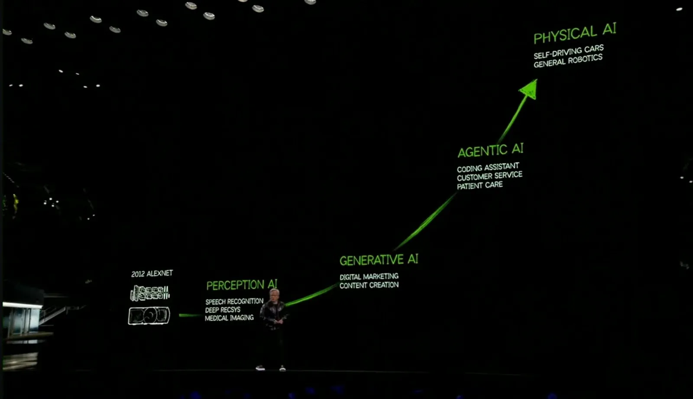
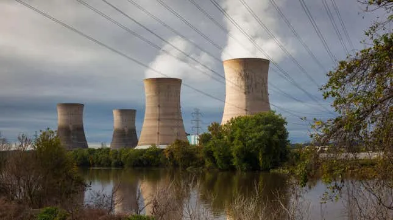
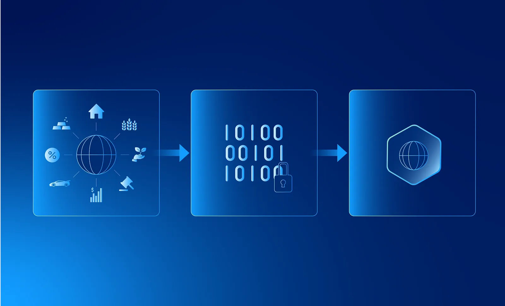
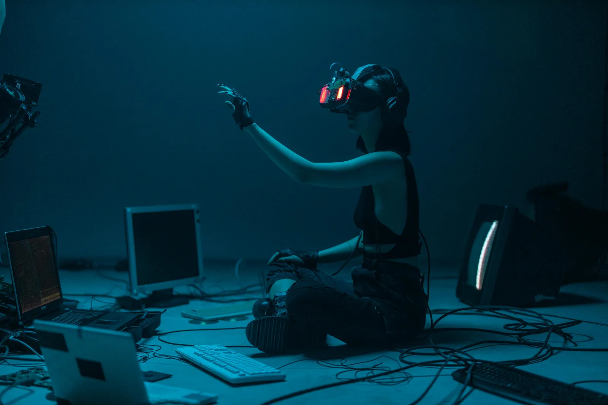

After some long vacation break, it's time to get back.
To all of you that read my articles, thank you. It means a lot.
Hope to bring you a constant flux of new articles/ideas throughout the year.
2025 here we go!
Do you ever feel like tech is moving too fast? Well, because it is.
I've spent the last few weeks diving into emerging tech and testing new tools (such as AI agents). To be fair my brain is about to explode. So much new tools/information that he doesn't know where to start or what to start.
Nonetheless, I've pinned it down to the five trends that I believe will somehow shape how we work and live in 2025.
Why should you care?
Because they will transform your life and you will notice it. And sometimes you won't.
Whether you're a developer, manager, creator, executive, salesman, lawyer, chef, engineer… or human, these trends will matter to you.
1. AI Agents Become Your New Work Colleague
Remember when chatbots were just glorified FAQ systems? Those days are long gone.
2024 was the year AI agents went from "interesting tech demos" to actually useful tools. In 2025, they're about to become fully powered digital workers.
Your new work buddies.
You will be using one or talking to one and you won't even know it.
Just yesterday, on an Nvidia presentation: “AI agents are a multi-trillion dollar opportunity.” — Jensen Huang, Nvidia CEO

Why This Changes the Game 🤖
I've checked some AI agents and even built one myself, and the progress is mind-blowing. These aren't just chat interfaces anymore.
They can:
See and understand images
Browse the web independently
Make purchases and transactions
Coordinate with other agents
Mimic full human personalities
Just see these examples:
Can you distinguish AI from Human now?
The Enterprise Gold Rush 💼
The enterprise agent market is growing fast. Major players like Microsoft, Google, and Salesforce are in a fierce competition for dominance.
Why? Because whoever wins this race might control the future of work.
Companies are already using agents for customer service, data analysis, and coding (hello Cursor).
SaaS companies are moving to agent-first approaches
Enterprise-focused agent platforms are raising massive funding rounds (source)
The Dark Side 🌑
But here's something not enough people are talking about: agents still make mistakes. And as they get more responsibility, those mistakes will have bigger consequences.
My prediction? 2025/26 will likely see the first major "agent incident" that makes mainstream news.
It will happen. Not if but when.
The Opportunity 🎯
Despite the risks, the opportunity is massive. Companies that figure out how to effectively deploy and manage agents while minimizing risks will have a huge competitive advantage.
Cost reduction through automation
24/7 operation capability
Scalability without linear staff increases
Faster decision-making
No "people" problems.
I'm preparing an article on how to create a simple AI agent. In the meantime, check https://github.com/elizaOS/eliza if you want to build one yourself.
2. Nuclear Powers the AI Revolution

AI needs power. Lots of it.
Training large AI models consumes massive amounts of energy. And as AI becomes more important, this energy demand is skyrocketing.
With great power, comes great... energy consumption.
Enter Nuclear Power ⚛️
This is where nuclear power's comeback begins.
Small Modular Reactors (SMRs) are making nuclear more accessible
New safety systems make meltdowns almost impossible
Waste recycling technologies are reducing environmental impact
Advanced materials are improving efficiency
The Tech Industry's Nuclear Push 🏢
Major tech companies are already working in the shadows on it:
Microsoft is investing in nuclear projects for data centers (source)
Google is exploring nuclear options for power-hungry AI operations(source)
Several startups are developing specialized nuclear solutions for tech companies(source)
Why This Matters 💭
The implications are huge:
Sustainable AI development and other tech.
Reduced carbon emissions
More reliable power grids
Potential for energy price stability
We need power. And we need it fast.
3. Real World Assets Take Over

Blockchain has other uses besides crypto.
Decentralized technologies have been moving from crypto into mainstream enterprise applications, especially through Real World Assets (RWAs).
What are RWAs? Think real estate, gold, art, or even revenue from a business. Actual things with real value being brought onto the blockchain.
Why this? Because decentralized technologies (e.g: blockchain) solve real problems around security, transparency, and efficiency in traditional markets.
The Revolution Begins 🚀
Let's use an example.
Imagine a luxury apartment building worth €10 million. Normally, you'd need to be pretty rich to invest in something like this.
But with RWAs, that building can be split into thousands of tokens, each representing partial ownership. Suddenly, you could invest 1,000€ and own a piece of that building.
This is already happening. (source).
What's Actually Changing? 💫
Enterprise adoption is accelerating as businesses discover what's possible:
Real Estate: Buildings being split into affordable chunks for regular investors
Art Markets: Famous paintings being fractionally owned by multiple collectors
Business Revenue: Companies sharing their income streams through tokens
Supply Chains: Products tracked from factory to store, all on blockchain
Why This Matters Now 🎯
The tech has existed for a while, but 2025 is different:
Traditional finance is finally embracing it
Regulatory frameworks are getting clearer
The infrastructure is actually ready
Real companies are using it, not just crypto enthusiasts
Most users won't even know they're using decentralized tech. It'll just work better.
Take "Off The Grid" for example. A new video game that uses blockchain technology on the background and people don't even know or think about it. (source). They don't care. They just wanna play and things to work better.
4. Gaming Goes Infinite

The future of gaming isn't about finishing levels and reach the endgame.
People want endless, evolving experiences. There is no endgame.
Every day, a new, different, experience.
"Infinite games" will change how we think about entertainment.
These aren't normal games. They're persistent worlds. They evolve with their players.
What Makes Games Infinite? ♾️
AI-driven narratives that adapt to each player and each player action.
Procedurally generated content that never runs out
Player-created content that expands the game world
Real economies powered by blockchain
Beyond Entertainment 🎯
All cool and nice but the impact can extend beyond gaming:
Virtual training environments
Educational simulations
Social platforms
Cultural experiences
Can you imagine? A never ending game? Can you detach from it?
5. AI-Generated Video Improves 🎥
AI is reshaping video creation, making it faster, cheaper, and more accessible.
There is already out there photos and videos that you cannot distinguish between AI vs Human generated.
Just watch the video above and tell me if you can detect if the human is AI generated or not.
You need to get used to seeing new things that are not created by humans.
What’s Happening? 🌟
AI tools for video creation are evolving to handle complex video tasks:
Tailored Models: Specialized for ads, education, or storytelling.
Precision Control: Adjust lighting, camera angles, and even character personalities.
Cost Efficiency: High-quality results at a fraction of the usual cost and time.
Imagine, you, generating an entire movie, from script to final edit, with just a few clicks.
The movie that you always wanted to exist.
The Opportunity 🎯
AI video makes creativity accessible to everyone. Enabling anyone to produce impactful content.
The quantity of content will exponancially improve.
But what about quality?
Whether you’re an individual or a business, this technology will transform how stories are told.
And how you see the world.
What This Means Us
These trends can and it will shape our future. But what really is the impact for us?
Should we be scared? Should we be enthusiastic? Should we ignore it?
Career Implications
What new jobs will emerge?
Which skills will become obsolete?
How will your current role evolve?
What opportunities should we prepare for?
Personal Impact
How these technologies might affect our daily life?
What new capabilities we might have access to?
Potential risks and how to prepare for them?
How to take advantage of these changes?
The Future.
The goal isn't to predict the future perfectly.
Well, nobody can do it. At least that I know of.
We just need to understand that the present as it is will change. And it will change a lot.
In the meantime, let's see what happens.
The future is bright.
We are in the best timeline.
Until Next Time 😎
Got thoughts? Questions? Just want to say hi? I'm all ears! You can find me on the professional network (LinkedIn) or the digital playground (X).
I'm always up for a chat and promise to get back to everyone. After all, the best part of writing is the conversations it starts.